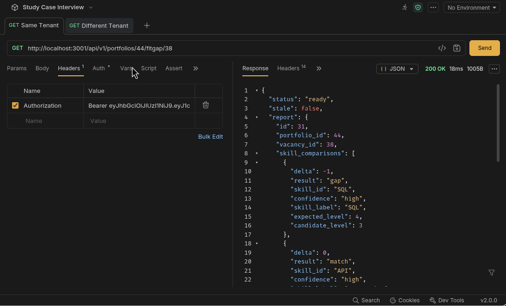
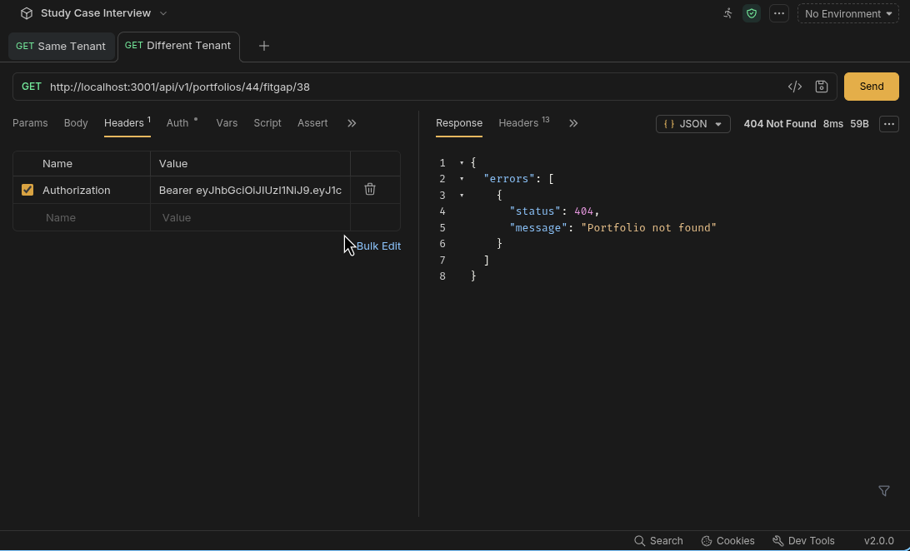
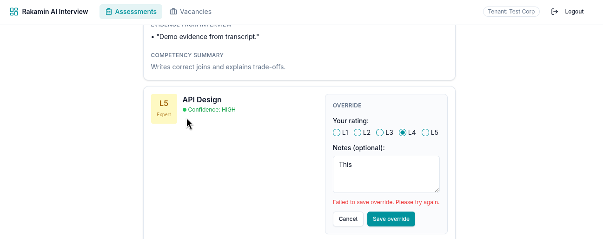
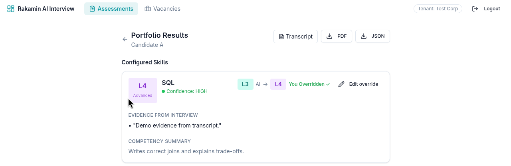
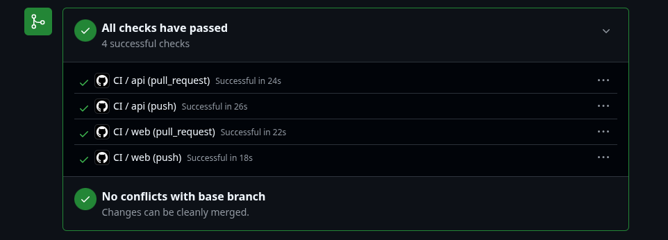
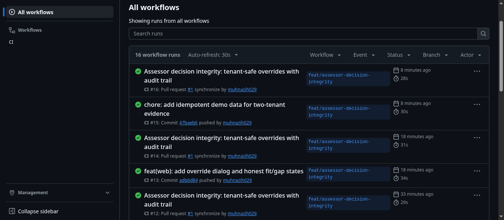

Tenant-safe portfolio access, accountable assessor overrides, and reliable fit/gap reporting
This submission is backend-heavy with a targeted frontend slice. The highest-risk issues were in data isolation, decision accountability, and background regeneration (Rails API, PostgreSQL, Sidekiq, request specs, CI). I also delivered the frontend changes required to make those fixes usable and trustworthy: an override dialog with validation, provenance in the comparison view, and honest fit/gap states.
CI=true (eager loading) and GitHub Actions green; seeded-fault reproduction (red → green) on a scratch branch; manual/UI and API evidence screenshots.Interview evidence, skill ratings, override reasons, and fit/gap outputs are personal/candidate-related data. The implementation keeps access tenant-scoped, records human edits in an append-only audit trail, avoids committing secrets or real candidate data, and uses fixture-based demo data. Logs and commits must not contain PII or credentials.
Findings came from end-to-end runs, API inspection, and schema/code review. Severity: P0 blocker/leak, P1 core workflow broken, P2 trust/onboarding, P3 polish.
| Sev | Finding | Impact (1 sentence) | Classification | Reproduction / evidence |
|---|---|---|---|---|
| P0 | Portfolio/fit-gap access not consistently scoped to the requesting organization; portfolio ownership not enforced by tenant on lookups. | Another organization can read or act on candidate decision data by ID. | Defect | API: token for org B requests org A portfolio/fit-gap → unauthorized access before fix. Evidence: portfolios_controller.rb lookups, schema missing tenant ownership on portfolio path; fixed by cb9a669, spec tenant_isolation_spec.rb. |
| P0 | Tenant context resolved from JWT claims without signature verification. | A forged claim could influence tenant resolution. | Defect | TenantResolverMiddleware claim handling; fixed to verify signature in cb9a669. |
| P1 | Override reason optional; only latest override retained. | Human corrections cannot be explained or reconstructed later. | Missing specification (PRD Phase 5 does not define override rationale/audit) | assessor_overrides allows optional notes/latest state; fixed by bf8bc87 (min 10 chars, assessor_override_versions append-only). |
| P1 | Fit/gap regeneration deletes the existing report before a new job completes. | A failed/slow job can leave no exportable report. | Defect | Regenerate path destroys report then enqueues; fixed by 092eaa3 (in-place update, keep prior report). |
| P1 | Duplicate regeneration/enqueue and stale report handling are unsafe. | Repeated triggers create unnecessary work and stale results can mislead. | Defect | Polling/trigger behavior and lack of version gating; fixed by 092eaa3 (cache guard, computed_overrides_version/overrides_version, stale discard) and adb6d84 (no poll-triggered POST storm). |
| P1 | Fit/gap UI lacks honest state handling and override provenance. | Assessors cannot reliably see whether a report is ready/pending/stale or why a rating changed. | Missing specification / UX defect | FitGapReportPage/ComparisonTable before fix; addressed in adb6d84. |
| P2 | Login error could disappear due to global 401/403 redirect on auth attempts. | Users misread failed login feedback as a refresh/glitch. | Defect | web/src/services/api.ts interceptor redirected on login 401; fixed by 005cf62. |
| P3 | Local onboarding details (ports/bin mode/env) caused setup friction. | First-run and CI reproducibility suffered until corrected. | Defect | Addressed in dev stack/CI commits (a72284d, 87d2247, 5eeee51). |
| Decision | Option A | Option B | Option C | Chosen & why |
|---|---|---|---|---|
| Tenant scoping | Add tenant_id/ownership + scoped lookups (reuse existing tenant patterns). | Join/predicate checks only at selected call sites. | Database row-level security (RLS). | A. Lower risk in this codebase, explicit and testable, no infra migration; B is easy to miss on new paths; C is stronger but higher change/risk for the timebox. |
| Audit storage | Append-only version table + current row. | Overwrite a single override row (optionally add fields). | Generic event-sourcing/log infrastructure. | A. Reconstructable decisions with simple reads; B loses history; C is over-engineered for this slice. Maintenance: append-only rows need retention policy later (noted). |
| Report freshness | Version counters + in-place update + stale discard/guard. | Delete cache/report on every override/regenerate. | Timestamp-only freshness checks. | A. Preserves last good report and is deterministic; B causes data-loss windows; C is fragile under clock/job timing. Failure mode: duplicate jobs still possible at race boundaries, but final correctness protected by versioning. |
portfolios
+ tenant_id (backfilled from session ownership)
+ overrides_version integer not null default 0
fit_gap_reports
+ computed_overrides_version integer not null default 0
assessor_override_versions (append-only)
portfolio_skill_id, tenant_id, version, ai_level, override_level,
reason, actor_id, actor_role, created_at
unique (portfolio_skill_id, version)POST /api/v1/portfolio_skills/:id/override
body: { override: { override_level, assessor_notes } } (reason required, min 10 chars)
201/200: { override, history_count } | 422 on validation
GET /api/v1/portfolios/:id/fitgap/:vacancy_id
200: { status: "ready"|"pending"|"missing", stale: boolean, report: {...}|null }
POST /api/v1/portfolios/:id/regenerate_fitgap
202: { status: "pending" } (does not delete the previous report)Override dialog enforces a reason and shows validation/422 feedback. The comparison view exposes provenance (AI vs assessor, overridden indicator, reason/who/when). The fit/gap page uses explicit states (loading/missing/pending/ready/failed), keeps prior report visible when stale, and polls with backoff without re-triggering generation on every poll.
history_count.ready/pending/missing and stale.# API (18 examples, 0 failures, CI=true eager load)
docker compose exec -e CI=true -e RAILS_ENV=test api bundle exec rspec --format documentation
# Web
cd web && npm ci && npm run buildKey specs: spec/requests/tenant_isolation_spec.rb, spec/requests/override_audit_spec.rb, spec/requests/fitgap_spec.rb (+ harness/health/auth specs). GitHub Actions CI runs the same classes of checks (API services + web build) and is green on the branch.
On a temporary evidence/seeded-fault branch (not merged), I intentionally bypass tenant scoping for portfolio lookups, ran tenant_isolation_spec.rb to observe a red failure, reverted the fault, and reran to confirm green. This demonstrates the regression test catches the targeted security failure.
git log on evidence branch if captured]/tmp/ad-hoc container commands and a fragile --rm --no-deps approach. Verification/correction: validated the app only after moving to a reproducible docker-compose.yml in the repo, confirming /api/v1/health and real login/authenticated requests worked end-to-end.config.hosts.clear in the test environment and produced blocked/403 behavior under request specs. Verification/correction: inspected the HTML/error response, adjusted to the Rails 7-compatible test configuration (config.hosts = nil) with clear intent, and re-ran specs/CI-mode eager loading.CI=true local runs before pushing.Screenshots from docs/screenshots/ and placeholders for remaining required evidence. (Responsive/long-text states: if not captured separately, note during walkthrough or add before final submission.)






docker compose up -d
docker compose exec -e CI=true -e RAILS_ENV=test api bundle exec rspec --format documentation
cd web && npm ci && npm run build
docker compose exec api bundle exec rails runner db/demo.rbUse the IDs/tokens printed by db/demo.rb for same-tenant (200) vs cross-tenant (404) fit/gap checks and UI walkthrough.